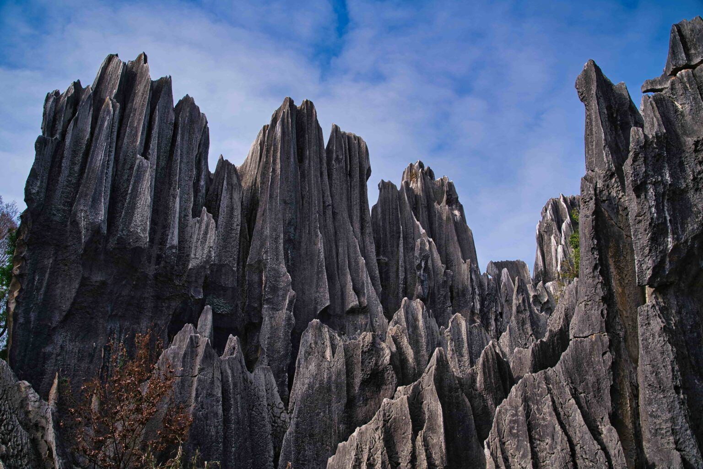

Témoignage voyage Madagascar
Merci – A toute l’équipe de PRIORI!
Il est temps de vous faire signe et surtout de vous remercier pour la parfaite organisation de notre voyage. Nous l’avons vécu en toute tranquillité, les programmes quotidiens étant planifiés soit par les Soeurs, soit par vos services à travers Mbola qui a été pour nous un chauffeur hors pair, un guide discret et un compagnon de route des plus sympathique. Il était attentif à nos besoins et toujours disposé à répondre aux nombreuses questions de mon mari qui découvrait Madagascar pour la première fois.

Voyage à Madagascar à travers les Tsingy de Bemaraha
En plus des merveilles naturelles découvertes (parcs, cirque rouge, tsingy, faune, flore….) nous avons beaucoup, beaucoup apprécié les visites dans les tout petits ateliers d’Ambatolampy, d’Antsirabé et Ambositra. Je savais les Malgaches artistes, mais de les voir travailler permet d’admirer leur habileté et leur savoir-faire. En compagnie de Sr Marie-Rose, nous avons pu aussi mesurer l’immense travail des communautés religieuses dans les écoles, les centres d’apprentissage, les dispensaires et les hôpitaux.
Nous avons eu de la chance avec le vol Diego-Tana, nous avons su la gabegie des jours suivants. Les images, les visages, les rencontres remplissent encore nos yeux et nos coeurs, nous rentrons enrichis de ce voyage. Si l’occasion se présente, nous ne manquerons pas de recommander PRIORI. A chacune, à Mbola en particulier, nous redisons un immense merci.
Nous vous souhaitons une bonne saison touristique et vous adressons nos meilleures salutations.
Cécile et René Z.